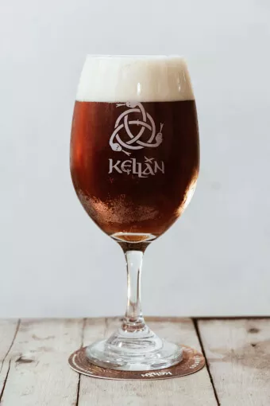
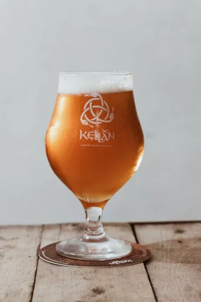
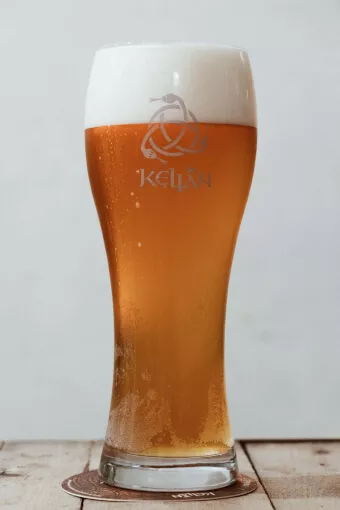

Cerveza artesanal
Bienvenidos a nuestra tienda online de cervezas artesanales, los invitamos a recorrer las especialidades

Red Ale
Se caracteriza por sus tonos intensos y su sabor robusto. Se elabora con una cuidadosa combinación de maltas tostadas que le otorgan su color rojo profundo.
- Alcohol 4%
- Ibu 15

Ipa Hops
Se utiliza una mezcla especial de lúpulos de alta calidad que le confiere un amargor equilibrado y notas frescas de frutas tropicales como mango y piña.
- Alcohol 5%
- Ibu 20

Amber
La fermentación se realiza a temperaturas más bajas para resaltar la limpieza y la suavidad de los sabores, con toques sutiles de miel y cereales.
- Alcohol 5%
- Ibu 13